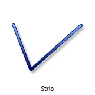
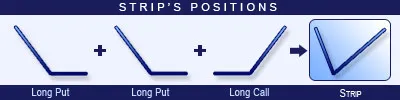
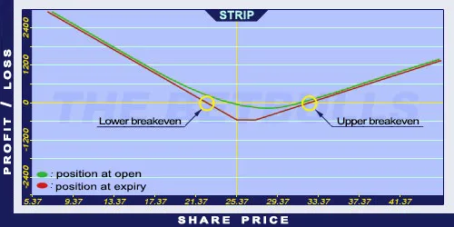

Description and use

Strip option is a version of the Long Straddle strategy. The difference is an extra Long Put option in the Strip. All components are ATM. Thus, trading Strip is more expensive and riskier than trading Long Straddle. The Upper breakeven point is the strike price plus net debit. The net debit is higher than for the Long Straddle, because there are more Long Puts. The direction of the market is neutral/decreasing. The investor speculates on increasing volatility. The strategy is a net debit investment. The maximum loss is the amount of net debit, and the maximum profit is unlimited. The optimal expiration is three months. If the share prices aren’t moving, the position should be sold one month before expiry.
- Type: Neutral, Bearish
- Transaction type: Debit
- Maximum profit: Unlimited
- Maximum loss: Limited
- Strategy: Volatility strategy
Opening the Position

Strip Option Positions
- Buy two (ATM) Put options.
- Buy one (ATM) Call option (same expiration and strike price as the Put options’).
Steps
Entry:
- Look for shares showing pennant or similar shapes on charts.
Exit:
- When share prices are increasing, sell the Call option.
- When share prices are decreasing, sell the Put option.
Basic Characteristics
- Maximum loss: Net debit.
- Maximum profit: Unlimited.
- Time decay: Time decay has a negative effect on the value.
- Lower breakeven point: Strike price - (Net debit / 2).
- Upper breakeven point: Strike price + Net debit.
Advantages and Disadvantages
Advantages:
- Profit is generated when the share price changes in any direction.
- Limited loss.
- The profit is potentially unlimited when share prices are moving.
Disadvantages:
- Expensive.
- The share price must change significantly to generate profit.
- High Bid/Offer spread can have a negative influence on the position.
Closing the Position
Sell the Call and Put options.
Mitigation of Losses
Sell the position when there is one month left until expiry.
Example

Strip strategy example with ABCD traded for $25.37 on 17.05.2017. The investor buys 2 Long Put options which have a strike price of $25.00, expire in August 2017, and cost $1.70 (premium). Then, buys a Long Call option which has a strike price of $25.00, expires in August 2017, and costs $2.40 (premium).
- Net debit: $5.80
- Maximum loss (risk): $5.80
- Maximum profit: Unlimited
- Lower breakeven point: $22.10
- Upper breakeven point: $30.80